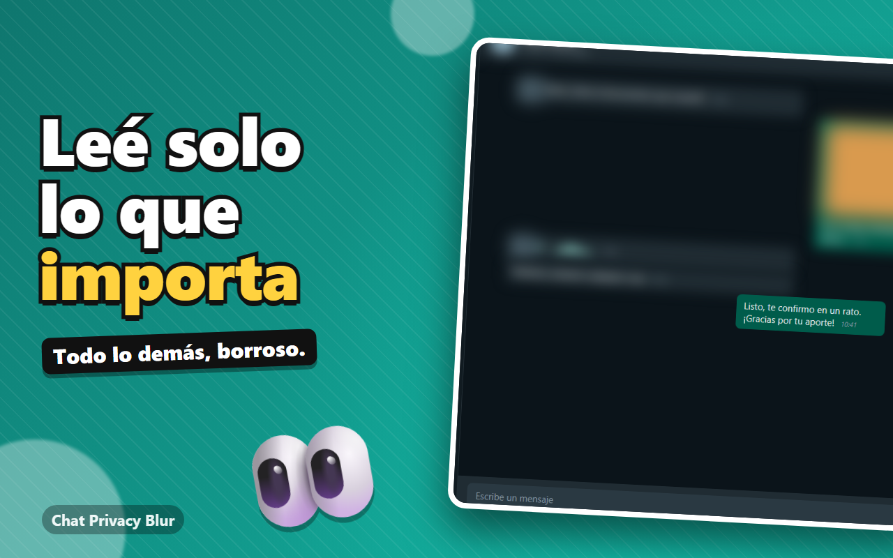
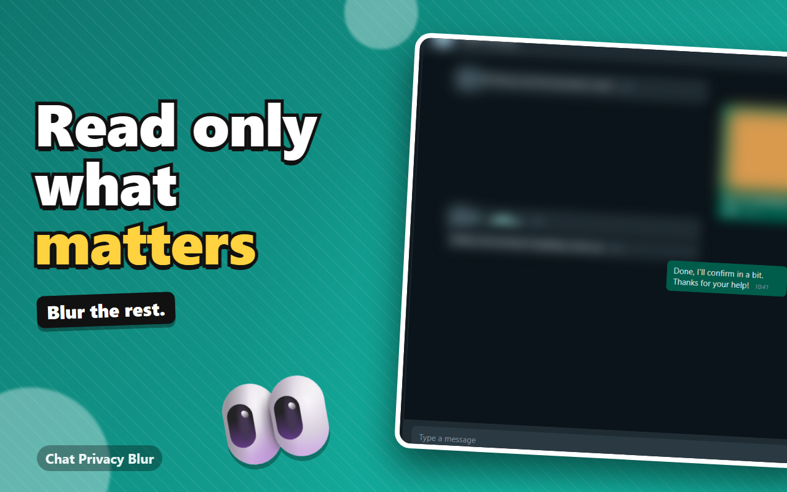
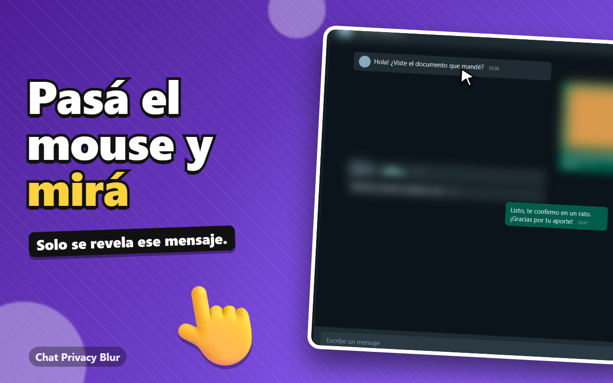
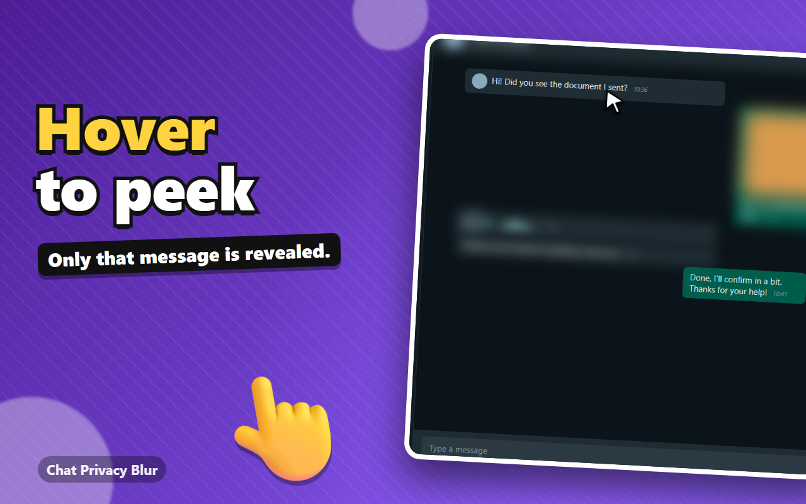
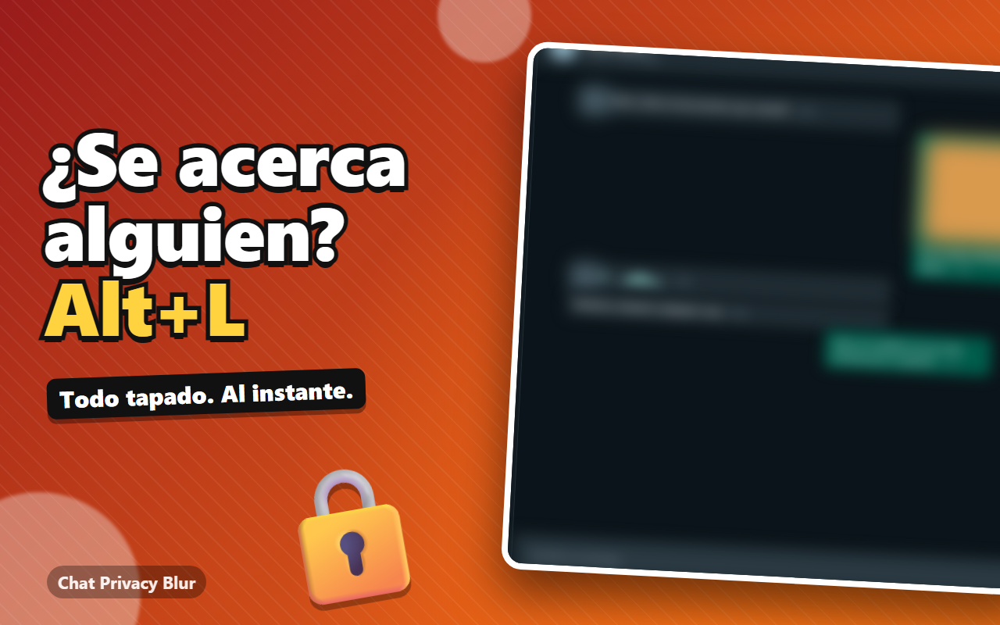
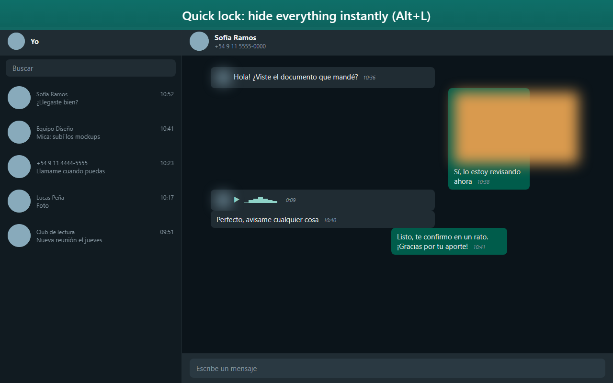
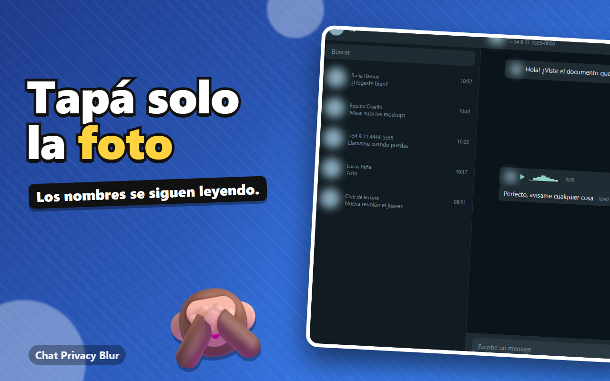
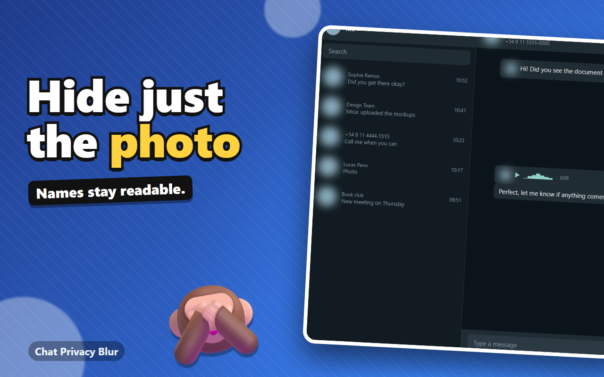

Tapá tus chats. Leé solo lo que importa.
Hide your chats. Read only what matters.
Chat Privacy Blur desenfoca la lista de chats, los nombres, las fotos y los mensajes de WhatsApp Web, para que nadie lea por encima de tu hombro. Vos elegís qué tapar y qué revelar.
Chat Privacy Blur blurs the chat list, names, photos and messages on WhatsApp Web, so nobody reads over your shoulder. You choose what to hide and what to reveal.
Disponible muy pronto en el Chrome Web Store.Coming very soon to the Chrome Web Store.
Sin cuenta. Sin rastreo. Sin publicidad.No account. No tracking. No ads.
Pasá el mouse por un mensaje para revelarlo. Mantené Alt para ver todo.Hover a message to reveal it. Hold Alt to see everything.
Elegís qué tapar y cómo revelarlo
You choose what to hide and how to reveal it
Cada cosa se prende y se apaga por separado, y se configura desde el ícono de la extensión.
Everything toggles separately and is configured from the extension icon.
Sector por sector
Sector by sector
Lista de chats (cada conversación por separado), encabezado con nombre y número, mensajes anteriores, último mensaje, imágenes y caja de escribir.
Chat list (each conversation on its own), header with name and number, previous messages, last message, images and the message box.
Pieza por pieza
Piece by piece
Tapá solo las fotos y dejá los nombres, o el avatar de un audio sin tapar el audio. Foto, nombre, vista previa, hora y estado, por separado.
Hide only photos and keep names, or a voice note's avatar without hiding the voice note. Photo, name, preview, time and status, separately.
Revelá solo lo que leés
Reveal only what you read
Al pasar el mouse se revela un solo chat o mensaje, con una demora que ajustás para no destapar sin querer. O con clic, de a uno.
Hovering reveals a single chat or message, with an adjustable delay so you don't uncover things by accident. Or on click, one at a time.
Mantené una tecla para ver todo
Hold a key to see everything
Alt por defecto, o la combinación de hasta 3 teclas que prefieras si choca con otro atajo.
Alt by default, or any combination of up to 3 keys you prefer if it clashes with another shortcut.
Bloqueo rápido
Quick lock
Un atajo (Alt+L) tapa todo al instante, incluso al pasar el mouse. Útil cuando alguien se acerca.
One shortcut (Alt+L) hides everything instantly, even on hover. Handy when someone walks up.
Se tapa solo Pro
Hides by itself Pro
Tapa todo tras un tiempo de inactividad o al salir de la ventana, y oculta el título de la pestaña ("(3) WhatsApp").
Hides everything after a period of inactivity or when you leave the window, and masks the tab title ("(3) WhatsApp").
Solo lo sensible
Only the sensitive stuff
Tapa solo teléfonos, emails, tarjetas, códigos y contraseñas dentro de los mensajes. El resto se lee normal.
Hides only phone numbers, emails, cards, codes and passwords inside messages. Everything else reads normally.
Bloqueo con contraseña
Password lock
Opcional y gratis. Una pantalla de contraseña cuando te alejás, a mano o automática. La contraseña nunca se guarda: solo un hash.
Optional and free. A password screen when you step away, manual or automatic. The password is never stored: only a hash.
Perfiles de situación
Situation profiles
Guardá tu configuración como Oficina, Reunión o Casa y cambiá con un clic.
Save your setup as Office, Meeting or Home and switch with one click.
Se repara solo
Self-repairing
WhatsApp cambia su HTML seguido. La extensión prueba varios selectores, detecta por estructura si fallan, y te muestra qué detecta.
WhatsApp changes its HTML often. The extension tries several selectors, falls back to structure detection, and shows you what it detects.
Cómo funciona
How it works
Tres pasos y sin configurar nada.
Three steps, no setup needed.
Instalala
Install it
Agregala a Chrome (también funciona en Edge y Brave).
Add it to Chrome (it also works in Edge and Brave).
Abrí WhatsApp Web
Open WhatsApp Web
Todo se desenfoca al instante, menos lo que decidas dejar visible.
Everything blurs instantly, except what you decide to keep visible.
Revelá lo que necesitás
Reveal what you need
Mouse, clic o una tecla. Ajustá todo desde el ícono de la extensión.
Mouse, click or a key. Adjust everything from the extension icon.
Capturas
Screenshots








Gratis, con Pro opcional
Free, with optional Pro
Por ahora, todo está incluido y es gratis.
For now, everything is included and free.
Lo esencial es gratis para siempre. Pro suma comodidad extra, con un pago único.
The essentials are free forever. Pro adds extra convenience, with a one-time payment.
Gratis
Free
- Todos los sectores a desenfocar
- Hasta 2 excepciones por contacto
- Bloqueo con contraseña
- Tapar datos sensibles
- Hasta 2 perfiles
- Reveal por mouse, clic o tecla
- Demora de reveal ajustable
- Bloqueo rápido
- Reparación automática
- Bloqueo por inactividad y al salir
- Modo negro y selectores propios
- All sectors to blur
- Up to 2 contact exceptions
- Password lock
- Sensitive-data blur
- Up to 2 profiles
- Reveal by mouse, click or key
- Adjustable reveal delay
- Quick lock
- Self-repair
- Idle and on-leave lock
- Black-out mode and own selectors
Pro
- Todo lo gratuito
- Excepciones ilimitadas
- Perfiles ilimitados
- Palabras propias a tapar
- Bloqueo por inactividad y al salir de la ventana
- Modo negro
- Ocultar el título de la pestaña
- Selectores CSS propios
- Presets Máxima y Pantalla
- Everything in Free
- Unlimited exceptions
- Unlimited profiles
- Your own words to blur
- Idle and on-leave lock
- Black-out mode
- Hide the tab title
- Your own CSS selectors
- Maximum and Screen share presets
Preguntas frecuentes
Frequently asked questions
¿No encontrás tu pregunta? Escribime a fixcelservice@gmail.com.
Can't find your question? Write to fixcelservice@gmail.com.
¿Es gratis?Is it free?
Sí, por ahora todo está incluido y es gratis.
Yes, for now everything is included and free.
¿Es gratis? ¿Qué agrega Pro?Is it free? What does Pro add?
Lo esencial es gratis para siempre: todos los sectores, reveal por mouse, clic o tecla, bloqueo rápido y reparación automática. Pro (pago único) suma excepciones y perfiles ilimitados (gratis hasta 2), palabras propias a tapar, bloqueo por inactividad y al salir de la ventana, modo negro, ocultar el título de la pestaña, selectores propios y los presets Máxima y Pantalla.
The essentials are free forever: all sectors, reveal by mouse, click or key, quick lock and self-repair. Pro (one-time payment) adds unlimited exceptions and profiles (free up to 2), your own words to blur, idle and on-leave lock, black-out mode, hiding the tab title, your own selectors and the Maximum and Screen share presets.
¿Lee o guarda mis mensajes?Does it read or store my messages?
No. Solo aplica un efecto visual sobre la página, dentro de tu navegador. No recolecta, guarda ni envía mensajes, contactos ni números. No usa servidores propios ni analítica. En la extensión hay una pantalla de “Actividad de red” que muestra todo lo que hace fuera del navegador.
No. It only applies a visual effect to the page, inside your browser. It does not collect, store or send messages, contacts or numbers. No own servers, no analytics. The extension has a “Network activity” screen that shows everything it does outside the browser.
¿Cómo dejo siempre visible un chat?How do I keep one chat always visible?
Con la lista de Excepciones del popup (gratis hasta 2 contactos; Pro no tiene límite): escribís el nombre o número del contacto, o tocás “Agregar el chat abierto”. Elegís si se libera solo el chat en la lista o también la conversación, y se puede definir por contacto agregando “| list” o “| chat” al final de la línea.
With the Exceptions list in the popup (free for up to 2 contacts; Pro has no limit): type the contact's name or number, or click “Add the open chat”. You choose whether only the chat in the list is released or the conversation too, and you can set it per contact by adding “| list” or “| chat” at the end of the line.
¿Puedo tapar solo los datos sensibles?Can I hide only the sensitive data?
Sí. Activá “Tapar solo los datos sensibles” y se ocultan teléfonos, emails, números de tarjeta, códigos de verificación y contraseñas dentro de los mensajes, sin tocar fechas ni horas. Se detecta en tu navegador y no se envía nada. Con Pro podés sumar tus propias palabras.
Yes. Turn on “Blur only sensitive data” and phone numbers, emails, card numbers, verification codes and passwords inside messages are hidden, leaving dates and times alone. It is detected in your browser and nothing is sent. With Pro you can add your own words.
¿Tiene bloqueo con contraseña?Does it have a password lock?
Sí, es gratis y opcional. Ponés una contraseña y WhatsApp Web se cubre con una pantalla de bloqueo cuando lo pedís (Alt+K) o tras los minutos sin uso que elijas. La contraseña nunca se guarda: solo un hash en tu navegador. Frena miradas casuales, no reemplaza bloquear la computadora. Si la olvidás, quitá la extensión e instalala de nuevo.
Yes, it is free and optional. You set a password and WhatsApp Web is covered by a lock screen when you ask (Alt+K) or after the idle minutes you choose. The password is never stored: only a hash in your browser. It keeps casual snoopers out; it does not replace locking your computer. If you forget it, remove the extension and install it again.
¿Qué son los perfiles de situación?What are situation profiles?
Guardás tu configuración con un nombre (Oficina, Reunión, Casa) y cambiás de una a otra con un clic. Podés guardar hasta 2 gratis; con Pro, todos los que quieras.
You save your settings under a name (Office, Meeting, Home) and switch between them with one click. You can save up to 2 for free; with Pro, as many as you like.
¿Cuántos mensajes quedan visibles?How many messages stay visible?
Los que elijas, de 0 a 50. Tus propios mensajes enviados se pueden dejar como los demás, siempre tapados o siempre visibles.
As many as you choose, from 0 to 50. Your own sent messages can follow the same rule, be always hidden or always visible.
¿Puedo tapar solo la foto o el nombre?Can I hide only the photo or the name?
Sí. En la configuración completa podés tapar por separado la foto, el nombre, la vista previa y la hora de cada chat, y en los mensajes el texto, la hora, las imágenes grandes y los avatares. Así, por ejemplo, podés ver una nota de voz sin su avatar.
Yes. In the full settings you can hide the photo, name, preview and time of each chat separately, and in messages the text, time, large images and avatars. That way you can, for example, see a voice note without its avatar.
¿Cómo tapo todo al instante?How do I hide everything instantly?
Con el bloqueo rápido, Alt+L: tapa todo, incluso al pasar el mouse. Alt+B activa o desactiva el desenfoque. Los dos atajos se pueden cambiar en chrome://extensions/shortcuts.
With quick lock, Alt+L: it hides everything, even on hover. Alt+B turns the blur on or off. Both shortcuts can be changed at chrome://extensions/shortcuts.
¿Puedo elegir otra tecla para ver todo?Can I choose another key to see everything?
Sí. Desde el popup elegís una tecla o una combinación de hasta 3, por si Alt choca con otro atajo.
Yes. From the popup you pick a key or a combination of up to 3, in case Alt clashes with another shortcut.
¿Qué pasa si WhatsApp cambia su diseño?What if WhatsApp changes its design?
La extensión prueba varios selectores y, si fallan, detecta los elementos por su estructura. El popup te muestra qué se detecta. Si algo se rompe, se corrige con una actualización.
The extension tries several selectors and, if they fail, detects elements by structure. The popup shows what is detected. If something breaks, it is fixed with an update.
¿Funciona en el celular o en la app de escritorio?Does it work on mobile or the desktop app?
No. Es una extensión de navegador: funciona en WhatsApp Web (web.whatsapp.com) con Chrome, Edge o Brave en computadora.
No. It is a browser extension: it works on WhatsApp Web (web.whatsapp.com) with Chrome, Edge or Brave on a computer.
¿En qué idiomas está la extensión?Which languages does the extension support?
En 13: español, inglés, portugués (Brasil), ruso, chino simplificado, japonés, francés, alemán, italiano, hindi, árabe, indonesio y turco. Podés cambiarlo desde el popup o dejarlo en Auto, que sigue el idioma de tu navegador.
13: Spanish, English, Portuguese (Brazil), Russian, Simplified Chinese, Japanese, French, German, Italian, Hindi, Arabic, Indonesian and Turkish. Change it from the popup or leave it on Auto, which follows your browser's language.
¿Cómo activo mi licencia Pro?How do I activate my Pro license?
Después de comprar, Polar te muestra la clave y te la manda por email. Abrí el popup, andá a “Chat Privacy Blur Pro”, pegá la clave y tocá Activar.
After purchase, Polar shows you the key and emails it to you. Open the popup, go to “Chat Privacy Blur Pro”, paste the key and click Activate.
¿En cuántos equipos puedo usar la licencia?How many devices can I use the license on?
En hasta 3. Si cambiás de computadora, usá “Quitar de este equipo” en el popup para liberar un lugar y activala en la nueva.
Up to 3. If you switch computers, use “Remove from this device” in the popup to free a slot and activate it on the new one.
¿Hay reembolsos?Are there refunds?
Los reembolsos siguen la política que se muestra al comprar. Escribime a fixcelservice@gmail.com con el email de tu compra.
Refunds follow the policy shown at checkout. Write to fixcelservice@gmail.com with your purchase email.
¿Está afiliada a WhatsApp?Is it affiliated with WhatsApp?
No. Chat Privacy Blur es un proyecto independiente, no afiliado, asociado ni respaldado por WhatsApp ni por Meta.
No. Chat Privacy Blur is an independent project, not affiliated with, associated with or endorsed by WhatsApp or Meta.
¿Cómo reporto un problema o sugiero algo?How do I report a problem or suggest something?
Escribime a fixcelservice@gmail.com. Si es algo que no se tapa, en el popup, “Avanzado”, hay un botón para copiar un diagnóstico del HTML sin textos ni nombres, que ayuda mucho a arreglarlo.
Write to fixcelservice@gmail.com. If something is not being hidden, in the popup under “Advanced” there is a button to copy an HTML diagnostic without texts or names, which helps a lot to fix it.
Tu privacidad, a tu manera
Your privacy, your way
Instalala y dejá de preocuparte por quién mira tu pantalla.
Install it and stop worrying about who is looking at your screen.
Agregar a Chrome — es gratisAdd to Chrome — it's freeDisponible muy pronto en el Chrome Web Store.Coming very soon to the Chrome Web Store.